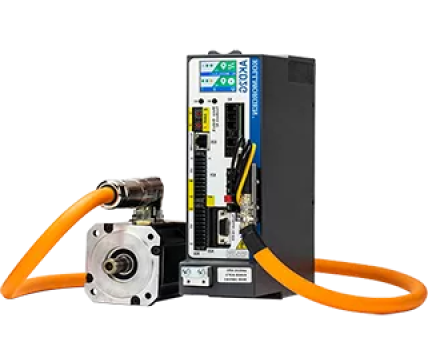
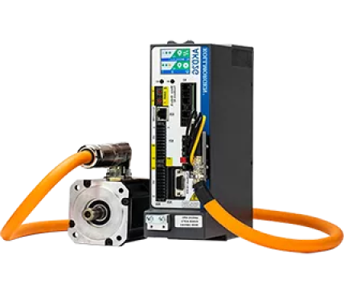

AKM 低温伺服电机
- 科尔摩根AKM低温伺服电机，可在-40ºC低温环境使用。无惧严寒 、性能稳定一如既往。
- 科尔摩根的无刷伺服电机产品在业界市场具有出色的性能及灵活性。基于AKM系列标准伺服电机，科尔摩根为低温应用场合研发了耐低温伺服电机，适应低至-40ºC的极寒环境使用。
- AKM系列电机及AKM低温电机由科尔摩根设计，中国本地工厂生产制造，充分结合卓越性能及优异货期，同时具备快速服务能力，是各类使用低温伺服电机应用场合的极佳选择。
AKM 低温伺服电机的特点
- 8种机框尺寸（40到 260毫米）
- 功率范围从0.08到19.5Kw
- 117种标准绕组，用于120/240/400/480Vac操作以及低压直流供电环境使用
- 灵活的法兰安装规格和轴尺寸选项
- 低齿槽力矩性能处于业界极高水平，操作平稳
- 采用特制耐低温轴承，专用于低至-40ºC低温环境
- 旋转变压器反馈，耐低温，冲击及振动
- 强大的定制能力-包括特殊绕组、特殊轴、连接器


AKM 低温伺服电机的应用
- 汽车测试
- 冷库搬运
- 低温振动疲劳试验
- 工业自动化低温测试装置
AKM 低温伺服电机的选型辅助工具
使用 AKM 性能曲线生成器，可以灵活设置以下变 量，确定电机在不同工作条件下的转矩速度曲线。
结合 MOTIONEERING选型软件，确保准确的低温 伺服电机选型，消除选型风险。
- 电机型号
- 供电电压
- 配合驱动器（科尔摩根AKD驱动器）
- 环境温度
- 反馈选项
- 抱闸选项
- 轴封选项
- 驱动器峰值电流

低温伺服电机产品规格
最大额定直流母线电压
最大连续转矩(失速)
最大峰值转矩 Nm
最大额定速度 RPM
最大额定功率kW
AKM1
AKM2
AKM3
AKM4
AKM5
AKM6
AKM7
AKM8
320
640
640
640
640
640
640
640
0.409
1.4
2.88
6.0
14.1
25.0
53.0
140
1.46
4.82
10.22
20.4
38.4
65.2
143
668
8000
8000
7000
6000
6000
6000
6000
3500
0.30
0.54
1.19
1.73
3.87
6.16
7.71
19.5


低温伺服电机 Q&A
科尔摩根直线电机是否可以在低温环境下使用？
在低温环境下科尔摩根电机动定子性能不受影响，但配套的金属光栅尺会有热胀冷缩的现象，如果定制其他材料的光栅尺，价格会很高。因此该类应用情况通常会推荐使用丝杠，不推荐使用直线电机。如果有具体需求请咨询科尔摩根技术人员。
除了低温伺服电机，直驱力矩电机有耐低温的吗？
TBM2G可以应用于最低-40℃环境。
低温伺服可以适应多低的环境温度？
我们低温伺服电机可以在零下40度环境下工作。
散热方案
AKM电机部分型号有专门的风扇散热，KBM以及DDL电机可以加装水冷套。其余无框电机取决于客户的设计方式。